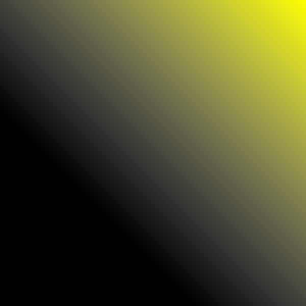

Qualitat: LOW

Qualitat: MEDIUM
Qualitat: HIGH
Imatge amb WEBP
Imatge amb AVIf

Per aquest tipus d'imatge, que és un degradat suau de colors, només el format PNG és adequat. Això és perquè: El format PNG conserva tots els detalls del degradat gràcies a la seva compressió sense pèrdua, evitant els "bandings" visibles que apareixen en altres formats com el JPEG. El format JPEG, fins i tot amb la qualitat més alta, introdueix artefactes de compressió i bandings que distorsionen el degradat, especialment en les versions LOW i MEDIUM. El format PNG manté una mida de fitxer raonable (55.45 KB) per la resolució proporcionada (600x600), sent una opció eficient i de màxima qualitat. En resum, per imatges amb degradats suaus com aquesta, només recomano utilitzar el format PNG. Els altres formats no són adequats.